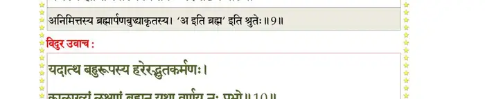
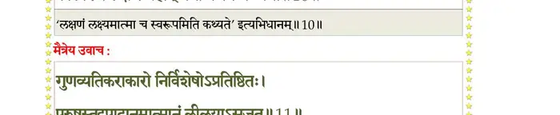
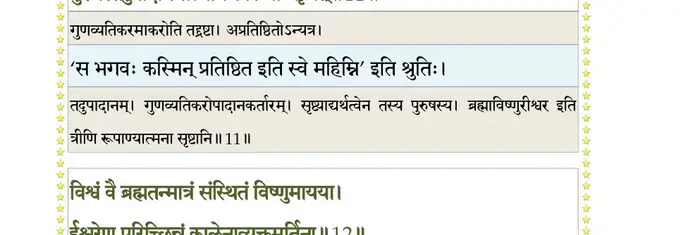
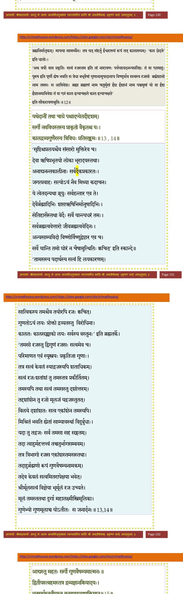
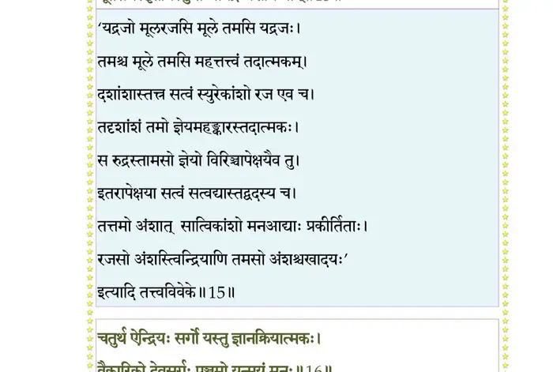
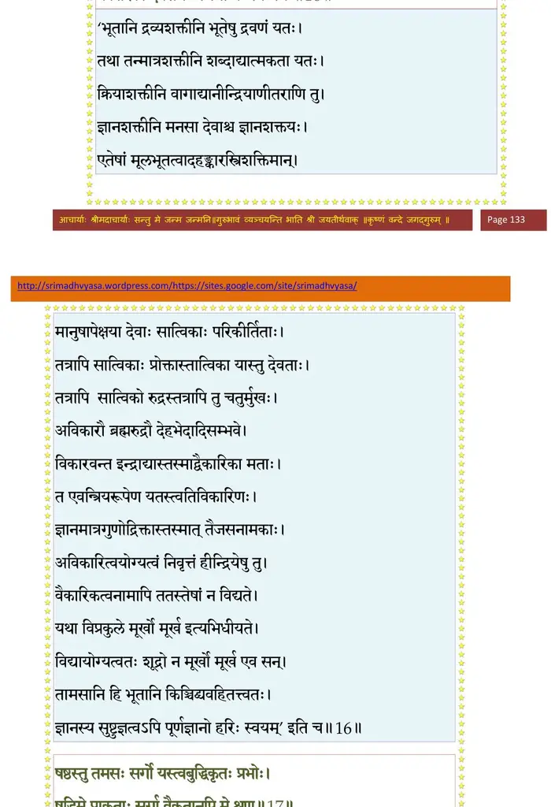
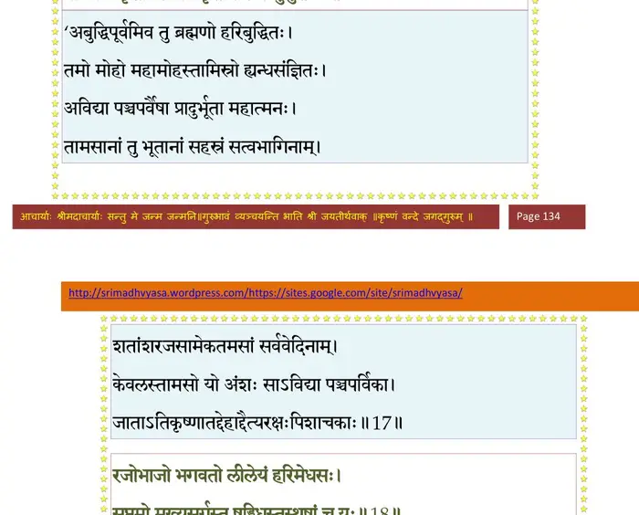
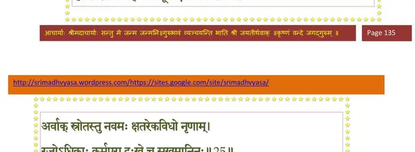
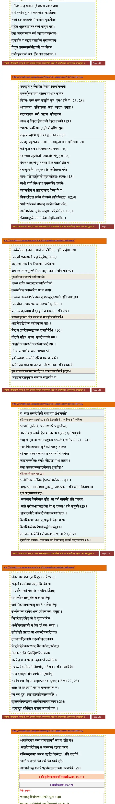

स्कन्ध 3 · अध्याय 11
श्लोक १
विदुर उवाच–
अन्तर्हिते भगवति ब्रह्मा लोकपितामहः ।
प््राजाः ससर्ज कतिधा दैहिकीर्मानसीर्विभुः।। १ ।।
अन्तर्हिते भगवति ब्रह्मा लोकपितामहः ।
प््राजाः ससर्ज कतिधा दैहिकीर्मानसीर्विभुः।। १ ।।
श्लोक २
ये च मे भगवन् पृष्टास्त्वय्यर्था बहुवित्तम ।
तान् वदस्वानुपूर्व्येण छिन्धिः नः सर्वसंशयान्।। २ ।।
तान् वदस्वानुपूर्व्येण छिन्धिः नः सर्वसंशयान्।। २ ।।
श्लोक ३
शुक उवाच–
एवं सञ्चोदितस्तेन क्षत्त्रा कौषारवो मुनिः ।
प््राीतः प््रात्याह तान् प््राश्नान् हृदिस्थानथ भार्गव।। ३ ।।
एवं सञ्चोदितस्तेन क्षत्त्रा कौषारवो मुनिः ।
प््राीतः प््रात्याह तान् प््राश्नान् हृदिस्थानथ भार्गव।। ३ ।।
श्लोक ४
मैत्रेय उवाच–
विरिञ्चोऽपि तथा चक्रे दिव्यं वर्षशतं तपः ।
आत्मन्यात्मानमावेश्य यथाऽह भगवानजः।। ४ ।।
विरिञ्चोऽपि तथा चक्रे दिव्यं वर्षशतं तपः ।
आत्मन्यात्मानमावेश्य यथाऽह भगवानजः।। ४ ।।
भागवततात्पर्यनिर्णय
श्लोक ५
तद् विलोक्याब्जसंभूतो वायुना यदधिष्ठितम् ।
पद्ममम्भश्च तत्कालकृतवीर्येण कम्पितम्।। ५ ।।
पद्ममम्भश्च तत्कालकृतवीर्येण कम्पितम्।। ५ ।।
श्लोक ६
तपसा ह्येधमानेन विद्यया चात्मसंस्थया ।
विवृद्धविज्ञानबलो न्यपाद् वायुं सहाम्भसा।। ६ ।।
विवृद्धविज्ञानबलो न्यपाद् वायुं सहाम्भसा।। ६ ।।
श्लोक ७
तद् विलोक्य वियद्व्यापि पुष्करं यदधिष्ठितः ।
अनेन लोकान् प््र•ग्लीनान् कल्पितास्मीत्यचिन्तयत्।। ७ ।।
अनेन लोकान् प््र•ग्लीनान् कल्पितास्मीत्यचिन्तयत्।। ७ ।।
श्लोक ८
पद्मकोशं तदाविश्य भगवान् कर्मचोदितः ।
एकं व्यभाङ्क्षीदुरुधा त्रिधा भाव्य द्विसप्तधा।। ८ ।।
एकं व्यभाङ्क्षीदुरुधा त्रिधा भाव्य द्विसप्तधा।। ८ ।।
श्लोक ९
एतावान् जीवलोकस्य संस्थाभेदः समासतः ।
धर्मस्य ह्यनिमित्तस्य विपाकः परमेष्ठिनः।। ९ ।।
धर्मस्य ह्यनिमित्तस्य विपाकः परमेष्ठिनः।। ९ ।।
भागवततात्पर्यनिर्णय

श्लोक १०
विदुर उवाच–
यदात्थ बहुरूपस्य हरेरद्भुतकर्मणः ।
कालाख्यं लक्षणं ब्रह्मन् यथा वर्णय नः प््राभो।। १० ।।
यदात्थ बहुरूपस्य हरेरद्भुतकर्मणः ।
कालाख्यं लक्षणं ब्रह्मन् यथा वर्णय नः प््राभो।। १० ।।
भागवततात्पर्यनिर्णय

श्लोक ११
मैत्रेय उवाच–
गुणव्यतिकराकारो निर्विशेषोऽप््रातिष्ठितः ।
पुरुषस्तदुपादानमात्मानं लीलयाऽसृजत्।। ११ ।।
गुणव्यतिकराकारो निर्विशेषोऽप््रातिष्ठितः ।
पुरुषस्तदुपादानमात्मानं लीलयाऽसृजत्।। ११ ।।
भागवततात्पर्यनिर्णय

श्लोक १२
विश्वं वै ब्रह्मतन्मात्रं संस्थितं विष्णुमायया ।
ईश्वरेण परिच्छिन्नं कालेनाव्यक्तमूर्तिना।। १२ ।।
ईश्वरेण परिच्छिन्नं कालेनाव्यक्तमूर्तिना।। १२ ।।
भागवततात्पर्यनिर्णय

श्लोक १३
यथेदानीं तथा चाग्रे पश्चादप्येतदीदृशम् ।
सर्गो नवविधस्तस्य प््र•कृतो वैकृतश्च यः।। १३ ।।
सर्गो नवविधस्तस्य प््र•कृतो वैकृतश्च यः।। १३ ।।
श्लोक १४
कालद्रव्यगुणैरस्य त्रिविधः प््रातिसङ्क्रमः ।
आद्यस्तु महतः सर्गो गुणवैषम्यमात्मनः।। १४ ।।
आद्यस्तु महतः सर्गो गुणवैषम्यमात्मनः।। १४ ।।
श्लोक १५
द्वितीयस्त्वहमस्तत्र द्रव्यज्ञानक्रियादयः ।
भूतसर्गस्तृतीयस्तु तन्मात्रद्रव्यशक्तिमान्।। १५ ।।
भूतसर्गस्तृतीयस्तु तन्मात्रद्रव्यशक्तिमान्।। १५ ।।
भागवततात्पर्यनिर्णय

श्लोक १६
चतुर्थ ऐन्द्रियः सर्गो यस्तु ज्ञानक्रियात्मकः ।
वैकारिको देवसर्गः पञ्चमो यन्मयं मनः।। १६ ।।
वैकारिको देवसर्गः पञ्चमो यन्मयं मनः।। १६ ।।
भागवततात्पर्यनिर्णय

श्लोक १७
षष्ठस्तु तमसः सर्गो यस्त्वबुद्धिकृतः प््राभोः ।
षडिमे प््र•कृताः सर्गा वैकृतानपि मे शृृणु।। १७ ।।
षडिमे प््र•कृताः सर्गा वैकृतानपि मे शृृणु।। १७ ।।
भागवततात्पर्यनिर्णय

श्लोक १८
रजोभाजो भगवतो लीलेयं हरिमेधसः ।
सप्तमो मुख्यसर्गस्तु षड्विधस्तस्थुषां च यः।। १८ ।।
सप्तमो मुख्यसर्गस्तु षड्विधस्तस्थुषां च यः।। १८ ।।
भागवततात्पर्यनिर्णय
श्लोक १९
वनस्पत्योषधिलता त्वक्सारा वीरुधो द्रुमाः ।
उत्स्रोतसस्तमःप््र•या अन्तःस्पर्शा विशोषिणः।। १९ ।।
उत्स्रोतसस्तमःप््र•या अन्तःस्पर्शा विशोषिणः।। १९ ।।
भागवततात्पर्यनिर्णय
श्लोक २०
तिरश्चामष्टमः सर्गः सोऽष्टाविंशद्विधो मतः ।
अविदो भूरितमसो घ्राणज्ञा हृदि(द्य)वेदिनः।। २० ।।
अविदो भूरितमसो घ्राणज्ञा हृदि(द्य)वेदिनः।। २० ।।
भागवततात्पर्यनिर्णय
श्लोक २१
गौरजो महिषः कृष्णः सूकरो गवयो रुरुः ।
द्विशफाः पशवश्चेमे अविरुष्ट्रश्च सत्तम।। २१ ।।
द्विशफाः पशवश्चेमे अविरुष्ट्रश्च सत्तम।। २१ ।।
भागवततात्पर्यनिर्णय
श्लोक २२
खरोऽश्वोऽश्वतरो गौरः शरभश्चमरी तथा ।
एते चैकशफाः क्षत्तः श्रुणु पञ्चनखान् पशून्।। २२ ।।
एते चैकशफाः क्षत्तः श्रुणु पञ्चनखान् पशून्।। २२ ।।
भागवततात्पर्यनिर्णय
श्लोक २३
श्वा सृगालो वृको व्याघ्रो मार्जारः शशशल्यकौ ।
सिंहः कपिर्गजः कूर्मो गोधा च मकरादयः।। २३ ।।
सिंहः कपिर्गजः कूर्मो गोधा च मकरादयः।। २३ ।।
भागवततात्पर्यनिर्णय
श्लोक २४
कङ्कगृध्रबकश्येना भासवल्लूरबर्हिणः ।
हंससारसचक्राह्वकाकोलूकादयः स्वगाः।। २४ ।।
हंससारसचक्राह्वकाकोलूकादयः स्वगाः।। २४ ।।
भागवततात्पर्यनिर्णय

श्लोक २५
अर्वाक्स्रोतस्तु नवमः क्षत्तरेकविधो नृणाम् ।
रजोऽधिकाः कर्मपरा दुःखे च सुखमानिनः।। २५ ।।
रजोऽधिकाः कर्मपरा दुःखे च सुखमानिनः।। २५ ।।
भागवततात्पर्यनिर्णय
श्लोक २६
वैकृतास्त्रय एवैते देवसर्गश्च सत्तम ।
वैकारिकश्च यः प््र•ेक्तः कौमारस्तूभयात्मकः।। २६ ।।
वैकारिकश्च यः प््र•ेक्तः कौमारस्तूभयात्मकः।। २६ ।।
भागवततात्पर्यनिर्णय
श्लोक २७
देवसर्गश्चाष्टविधो विबुधाः पितरोऽसुराः ।
गन्धर्वाप्सरसः सिद्धा यक्षरक्षांसि चारणाः।। २७ ।।
गन्धर्वाप्सरसः सिद्धा यक्षरक्षांसि चारणाः।। २७ ।।
भागवततात्पर्यनिर्णय
श्लोक २८
भूतप््रोतपिशाचाश्च विद्याध्रा किन्नरादयः ।
दशैते विदुराख्याताः सर्गास्ते विश्वसृक्कृताः।। २८ ।।
दशैते विदुराख्याताः सर्गास्ते विश्वसृक्कृताः।। २८ ।।
भागवततात्पर्यनिर्णय

श्लोक २९
अतः परं प््रावक्ष्यामि वंशान् मन्वतराणि च ।
एवं रजःप्लुतः स्रष्टा कल्पादिष्वात्मभूर्हरिः ।
सृजत्यमोघसङ्कल्प आत्मैवाऽत्मानमात्मना।। २९ ।।
एवं रजःप्लुतः स्रष्टा कल्पादिष्वात्मभूर्हरिः ।
सृजत्यमोघसङ्कल्प आत्मैवाऽत्मानमात्मना।। २९ ।।
श्लोक ३०
गुणव्यत्यय एतस्मिन् मायावत्त्वादधीशितुः ।
न पौर्वापर्यमिच्छन्ति नद्यां भ्राम्यद्भ्रमेर्यथा।। ३० ।।
न पौर्वापर्यमिच्छन्ति नद्यां भ्राम्यद्भ्रमेर्यथा।। ३० ।।
श्लोक ३१
देवासुरादयः क्षत्तः कल्पेऽस्मिन् ये प््राकीर्तिताः ।
त एव नामरूपाभ्यामासन् मन्वन्तरान्तरे।। ३१ ।।
त एव नामरूपाभ्यामासन् मन्वन्तरान्तरे।। ३१ ।।
।। इति श्रीमद्भागवते तृतीयस्कन्धे एकादशोऽध्यायः ।।